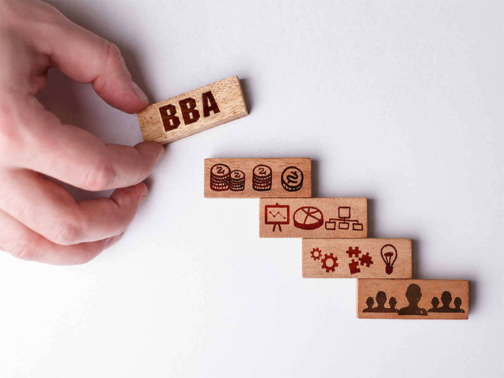

BBA and BCA
Bachelor in Computer Application (BCA) is an undergraduate degree course in computer applications.
BCA Course is to provide young men and women with the required knowledge and necessary skills to get rewarding careers into the changing world of Information Technology.
BBA or Bachelor of Business Administration is a 3-year UG degree program. A six-semester program is designed to offer a grip on the functional aspects associated with organizations, and their branches.
Bachelor of Business Administration deals with the knowledge regarding commerce, business, administration, and marketing to help students develop their managerial and entrepreneurial skills to become influential leaders and managers in the future.
List of Management Course
BCA (Bachelor in Computer Application)
Bachelor in Computer Application (BCA) is an undergraduate degree course in computer applications.
BCA Course is to provide young men and women with the required knowledge and necessary skills to get rewarding careers into the changing world of Information Technology.
Bachelor in Computer Application (BCA) is one of the popular courses among the students who want to make their career in the IT (Information Technology) field. The duration of the course is 3 years and divided into 6 semesters.
The BCA subjects cover programming languages like C++ and JAVA, Networking, Fundamentals of Computers, Multimedia Systems, Data Structure, Web-Based Application Development, Web Designing, and Software Engineering amongst others.
This course provides a lot of opportunities for the students to do freelancing or develop their own software if they have that much skills. There are many software MNCs (Multinational Companies).
BBA (Bachelor of Business Administration)

BBA or Bachelor of Business Administration is a 3-year UG degree program. A six-semester program is designed to offer a grip on the functional aspects associated with organizations, and their branches.
Bachelor of Business Administration deals with the knowledge regarding commerce, business, administration, and marketing to help students develop their managerial and entrepreneurial skills to become influential leaders and managers in the future.
BBA subjects are focused on developing an understanding of marketing, finance, human resource management, business economics, etc.
BBA Job Scope is vast and offers opportunities in various specializations from marketing executives to business consultants in both private and government sectors. After course completion, BBA graduates can find job opportunities in finance, marketing, human resources, banking, accounting firms, etc. BBA full form stands for Bachelor of Business Administration.
This presents lucrative career options in the world of business and corporate management. It gives an edge over other students due to the practical knowledge a student gets which is a good way to have the option of great career Growth.